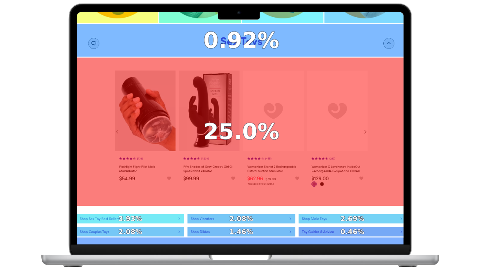
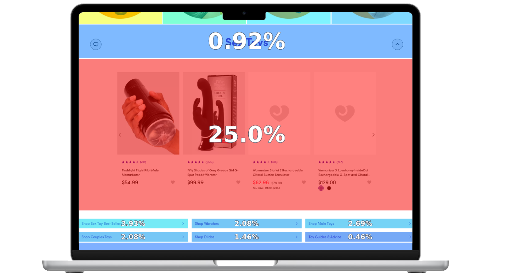

Best Sellers
June - August 2023
The majority of adult product shoppers lack knowledge about
product variety and function. This leads many of Lovehoney’s
shoppers to visit the Best Seller page for inspiration.
The best sellers page is one of the higher performing pages on the
site, but could we improve it further?

Using both site and comparative analyses to identify where changes could be beneficial, I presented multiple page layouts that could be easily supported by Amplience, our CMS. Based on the feedback, I mocked up page updates for all 5 Best Seller pages and A/B testing began. After one month, most changes were not beneficial; however, we were able to add an evergreen "See more" CTA that accounted for 53.4% of taps on mobile and 26.2% on desktop.


Goal
Improve the Best Sellers shopping experience to increase conversions, revenue per click, and overall page value.
Research & Discovery
Site Analysis
First, I looked into what was working and what areas could use
improvement in both mobile and desktop views. To do this, I used
Contentsquare to see where the opportunities were on the page
based on revenue.
I found that the link blocks were not often interacted with and
for mobile users, about 81% of our audience, this element took
up a lot of valuable vertical space.
 

Comparative Analysis
I also wanted to research layouts that were proven successful. I
used Baymard to find sites that have well performing best seller
pages.
The trend seemed to be a page layout as a product listing page,
rather than product carousels.
Design Process
Although we wouldn’t have dedicated developer support, I still wanted to design multiple options for how we could approach the solution. Moving from lo-fi to hi-fi wireframes, I began ideating.
Control
In the original design, each category header was set to H1 styling, which may be problematic for SEO but can certainly cause confusion if using a screen reader. Link blocks navigating users further into their journey were grey and easy to miss. On mobile devices, these stacked and took over the majority of the screen.
Variant A
Based on my competitor analysis, I offered an idea to change the layout entirely to be like our product listing pages. This wasn’t feasible to build and required more time to determine how additional features worked, like filtering. But exploration can always lead to more appropriate solutions!
Variant B
In this variant, I wanted to highlight the top selling product to help ease choice paralysis further. Each category would then send users to product listing page of that best sellers’ category.
Variant C
I realized having a “See more” option was necessary, as that
link was performing well in all categories. In the final design,
I wanted it to pop, so I removed it from the link blocks and
made it a stand alone button.
I also replaced the link blocks with a colorful pill button
component.

Without developer support, how might we create an engaging shopping experience for new and returning users?
Challenges & Solutions
The North America team did not have its own budget for
conducting user testing or development support. Any design
updates would need to be supported by the components available
in Amplience, the content support tool. It would also need to be
maintained by the Storefront team alone. This created a lot of
limitations.
The biggest challenge was the “See more” CTA. The option for a
row with a single CTA button had not been done before. But with
a little HTML hacking, I figured out a way to achieve it.
Feedback
When I shared these with the North America team, Variant C was
the winning and achievable design. However, we realized that
along with the main Best Sellers landing page, the additional
category pages needed to be updated.
Another challenge that presented was the lack of guides. The
pill buttons needed rules for color combinations between the
text, pill button, and the pill’s image. A writing style guide
was also needed to define the use of hyphens and capitalization
in products and phrases, like Best Sellers vs best-selling. As I
was designing the new layouts, I determined the rules for these.
Impact & Results
Once I had set up the Storefront team with mockups for all 5 best
seller pages, we conducted an A/B test on both the live US and CA
sites. The changes were on site for one month before we evaluated.
When the time came, I put together our results from Google
Analytics and Contentsquare.
Overall, the changes were unfortunately unfavorable. Looking at US
performance, 4 out of 5 pages decreased in page value and
conversions. But there was a ray of light! The “See more” CTA was
highly engaged with, accounting for 53.4% of taps on mobile and
26.2% on desktop. The success of this button led it to become a
standard piece on the Best Seller pages.


Reflection
Although the test overall was not positive, it pushed valuable changes. Looking at the journey as a whole reminded us to make updates to all the pages to keep users in a consistent flow. Testing multiple changes was risky, but with multiple tools for analysis, we were able to discover a success in the negative results.